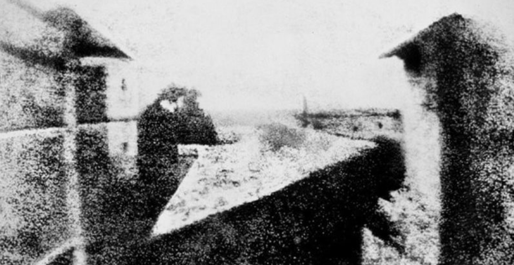

Historia
La idea de capturar imágenes está presente desde épocas antiguas. La cámara oscura es un espacio cerrado, totalmente oscuro, en el cual entra luz por una abertura y proyecta una imagen invertida. Este principio era conocido desde los tiempos de Aristóteles (300 a.C.). Las primeras publicaciones en Occidente aparecieron en el siglo XV, con Leonardo DaVinci y Cesare Cesarino. A partir de ahí, científicos como Giovanni Battista Della Porta o Gerolamo Cardano experimentan con la cámara oscura en 1558. Johann Zahn (S.XVI), desarrolló estos principios en un aparato de madera, que estaba listo para convertirse en una cámara, pero no fijaba las imágenes. Carl Wilhelm publicó su tratado sobre las sales de plata y su reacción a la luz. Con estos descubrimientos, varios artistas como Giovanni “Canaletto” Canal combinaron las sales fotosensibles con la cámara oscura y lograron pinturas de luz. Las primeras imágenes fotográficas son obra de Nicéphore Niepce, quien logró resultados mediante la prolongada exposición a la luz de placas de peltre cubiertas en betún, dentro de la cámara oscura. La primera imagen obtenida así fue Vista desde una ventana en Le Gras, de 1826, que tomó ocho horas de exposición con luz del día.

En 1827 Niepce y Louis Daguerre firmaron un acuerdo de trabajo que le dejó a este último todo el conocimiento de las técnicas fotográficas de Niepce tras su muerte en 1833. Daguerre añadió al mecanismo una placa de plata, sobre la cual se producían las impresiones, reduciendo el tiempo de exposición. Esta nueva técnica fue la forma más conocida de fotografía durante mucho tiempo. Al mismo tiempo, otros inventores desarrollaron sus propios métodos. El colodión húmedo sustituyó al daguerrotipo en la segunda mitad del siglo XIX, pues permitía realizar copias de la impresión, era más económico y reducía el tiempo de exposición. Con las placas secas al gelatino-bromuro se obtenían negativos en vidrio que se podían positivizar sobre papel para hacer copias de la foto. Algunos de sus más importantes fabricantes en Francia fueron los hermanos Lumière, inventores del cine. Durante el siglo XIX se intentó obtener fotografías a color. La primera fue obtenida por James Clerk Maxwell en 1861, a través de la toma de tres fotografías consecutivas con un filtro rojo, azul y verde cada una, para luego superponerlas en una proyección y obtener los colores deseados. La primera placa fotográfica a color fue patentada en 1903 por los hermanos Lumière, y llevada en 1907 a los mercados comerciales bajo el nombre de Autochrome. La película fotográfica a colores fue inventada recién en 1935, por la empresa Eastman Kodak y comercializada como Kodachrome (utilizada hasta 2009). En 1920 Oskar Barnack introdujo la cámara Leica, con un nuevo formato de película: el 35 milímetros. La fotografía digital permitió la supresión del rollo fotográfico y revelado químico, guardando las imágenes directamente en formato electrónico.